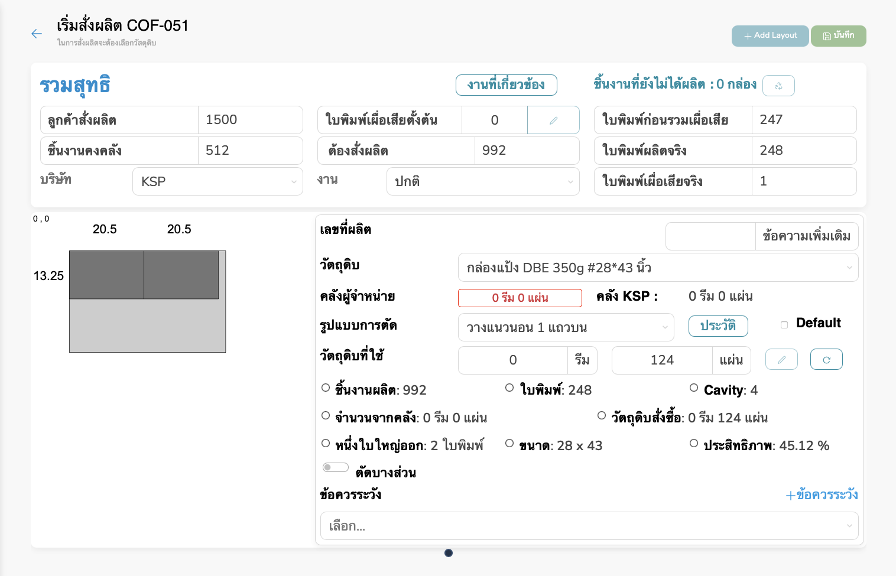

จัดกลุ่มสินค้าเพื่อผลิต
การจัดกลุ่มสินค้าเพื่อส่งผลิต
เตรียมการผลิต
Figure 1: Pre manufacturing page
ส่วนประกอบหลักของหน้า
-
ปุ่ม + เพิ่มกลุ่ม: ใช้สร้างกลุ่มสินค้าใหม่ เพื่อรวม PO
เข้ากลุ่มผลิตเดียวกัน
-
ช่องค้นหา: ค้นหารายการ PO หรือรหัสสินค้าในแต่ละส่วน (จัดกลุ่มแล้ว /
ไม่ได้จัดกลุ่ม)
-
ปุ่มเครื่องมือ:
ใช้เข้าไปจัดการรายละเอียดของคำสั่งผลิตนั้นเพื่อเริ่มสั่งผลิต เช่น
แก้จำนวน, เลือกวัตถุดิบ, สร้าง layout
-
สถานะจุดสี:
- จุดสีแดง - วงกลมเปล่า: ไม่มีงานก่อนหน้า
- จุดสีแดง - วงกลมทึบ: มีงานก่อนหน้าแล้ว
- จุดสีเขียว - วงกลมเปล่า: เป็นงานเดิม
- จุดสีเขียว - วงกลมทึบ: เป็นงานใหม่
เริ่มสั่งผลิต

Figure 2: Producing page
ส่วนประกอบหลัก
ด้านบน
- ลูกค้าสั่งผลิต: จำนวนสินค้าที่ลูกค้าสั่ง
- ชิ้นงานคงคลัง: จำนวนที่มีอยู่ในคลัง
- ต้องสั่งผลิต: จำนวนที่ระบบคำนวณให้ต้องผลิตเพิ่มเติม
- ใบพิมพ์เผื่อเสียตั้งต้น: จำนวนใบพิมพ์ที่เผื่อไว้เบื้องต้น
-
ใบพิมพ์ที่ก่อนรวมเผื่อเสีย: จำนวนใบพิมพ์ที่ได้รวมเผื่อเสียแล้ว
- ใบพิมพ์ผลิตจริง: จำนวนใบพิมพ์ที่ใช้จริง
- บริษัท: ชื่อบริษัทผู้ผลิต
- งาน: ประเภทงาน ได้แก่ ด่วน และปกติ
ส่วนแสดงภาพแบบการตัด
แสดงแผนภาพการจัดวางการตัดวัสดุลงบนแผ่นงาน
รายละเอียดวัตถุดิบและการตัด
- วัตถุดิบ: ประเภทวัสดุ เช่น กล่องแป้ง DBE 350g
- คลังผู้จำหน่าย / คลัง KSP: จำนวนวัสดุในแต่ละคลัง
- รูปแบบการตัด: เช่น วางแนวนอน 1 แถวบน
- วัตถุดิบที่ใช้: จำนวนรีมหรือแผ่นที่ใช้จริง
- ชิ้นงานผลิต: จำนวนที่ผลิต
- ใบพิมพ์: จำนวนใบพิมพ์ที่ใช้
- ขนาด: ขนาดแผ่นงานที่ใช้
- ประสิทธิภาพ: คำนวณจากพื้นที่ใช้งานจริง เทียบกับทั้งหมด
- Cavity: จำนวนชิ้นงานต่อ 1 ใบพิมพ์
สร้างแบบและสั่งผลิต
Figure 3: Layout to produce page
เสร็จสิ้นการผลิต
Figure 4: Production completed page
แผนผลิตประจำวัน
แผนผลิตประจำวัน (Daily Production Plan)
รายการพิมพ์สติ๊กเกอร์
รายละเอียดรูปแบบตารางการส่งออก